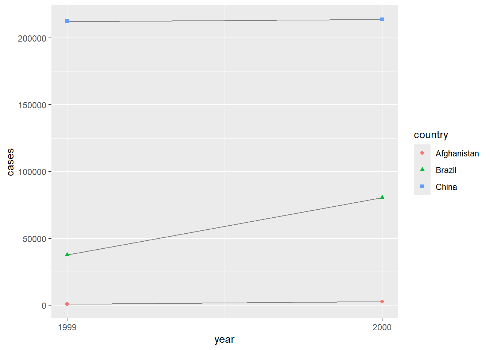

Chapter 5 Tại sao phải chuẩn hóa dữ liệu?
và tất cả các gói khác trong được thiết kế để hoạt động với dữ liệu gọn gàng. Dưới đây là một vài ví dụ nhỏ cho thấy cách bạn có thể làm việc với
## # A tibble: 6 × 5
## country year cases population rate
## <chr> <dbl> <dbl> <dbl> <dbl>
## 1 Afghanistan 1999 745 19987071 0.372741
## 2 Afghanistan 2000 2666 20595360 1.29447
## 3 Brazil 1999 37737 172006362 2.19393
## 4 Brazil 2000 80488 174504898 4.61236
## 5 China 1999 212258 1272915272 1.66750
## # ℹ 1 more row## # A tibble: 2 × 2
## year total_cases
## <dbl> <dbl>
## 1 1999 250740
## 2 2000 296920# Visualize changes over time
ggplot(table1, aes(x = year, y = cases)) +
geom_line(aes(group = country), color = "grey50") +
geom_point(aes(color = country, shape = country)) +
scale_x_continuous(breaks = c(1999, 2000)) # x-axis breaks at 1999 and 2000
Bài tập 1: Đối với mỗi bảng dữ liệu trên, hãy mô tả ý nghĩa của từng quan sát và từng cột.
Bài tập 2: Hãy phác thảo quy trình bạn sẽ sử dụng để tính toán tỉ lệ (rate) cho và . Bạn sẽ cần thực hiện bốn thao tác:
Trích xuất số ca bệnh lao (TB cases) của mỗi quốc gia theo từng năm.
Trích xuất dữ liệu dân số (population) tương ứng của mỗi quốc gia theo từng năm.
Chia số ca bệnh cho dân số, sau đó nhân với 10000.
Lưu lại kết quả vào vị trí thích hợp.